Kwiaty balkonowe i rabatowe z gospodarstwa w Sochocinie
Pelargonie, begonie, aksamitki, Supertunia Vista i Millionbells, a do ogrodu byliny, iglaki i krzewy ozdobne. Uprawiamy je od ponad 20 lat przy ul. Płońskiej 16.
- 20+ lat uprawy
- 5 grup roślin
- ul. Płońska 16, 09-110 Sochocin
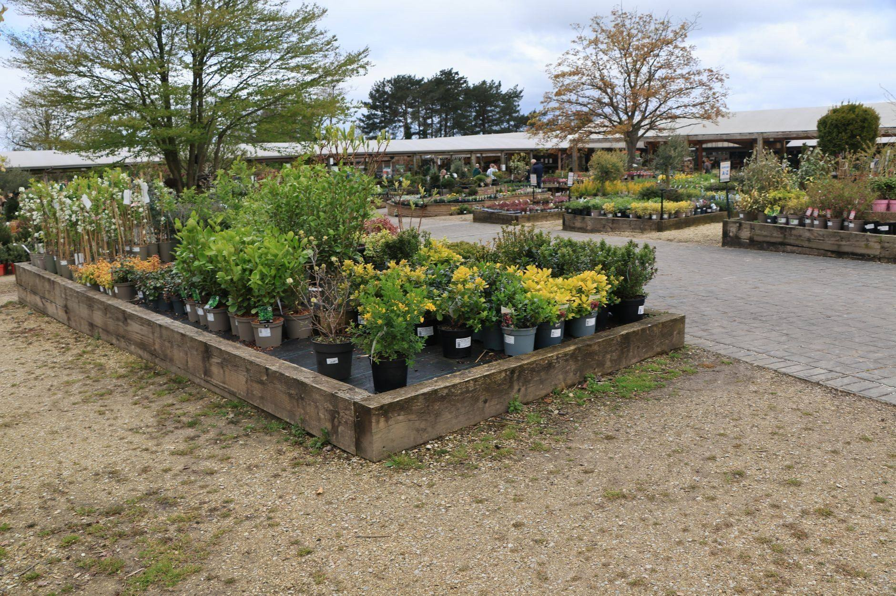
Kupujesz u ogrodnika, który je wyhodował
Gospodarstwo Ogrodnicze Lewandowscy od ponad 20 lat zajmuje się produkcją kwiatów i krzewów ozdobnych oraz bylin i iglaków. Rośliny oglądasz na miejscu, w Sochocinie, i sam wybierasz te, które chcesz zabrać.
Powiedz nam, gdzie mają rosnąć: na słonecznym balkonie, w półcieniu pod drzewem czy na rabacie przed domem. Podpowiemy, która odmiana sobie tam poradzi.
Więcej o gospodarstwieRośliny na balkon, rabatę i do ogrodu
Wiosną i latem królują kwiaty balkonowe i rabatowe. Do ogrodu są byliny, iglaki i krzewy ozdobne, które posłużą Ci przez lata.
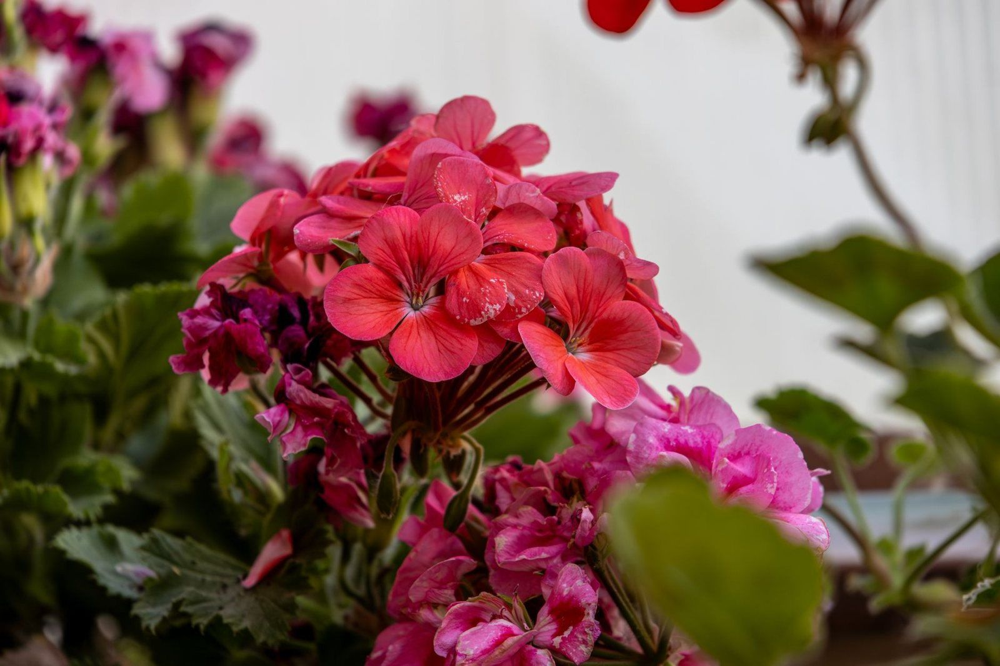
Kwiaty balkonowe
Pelargonie, begonie, Supertunia Vista i Millionbells do skrzynek, donic i koszy wiszących.
Kwiaty balkonowe w ofercie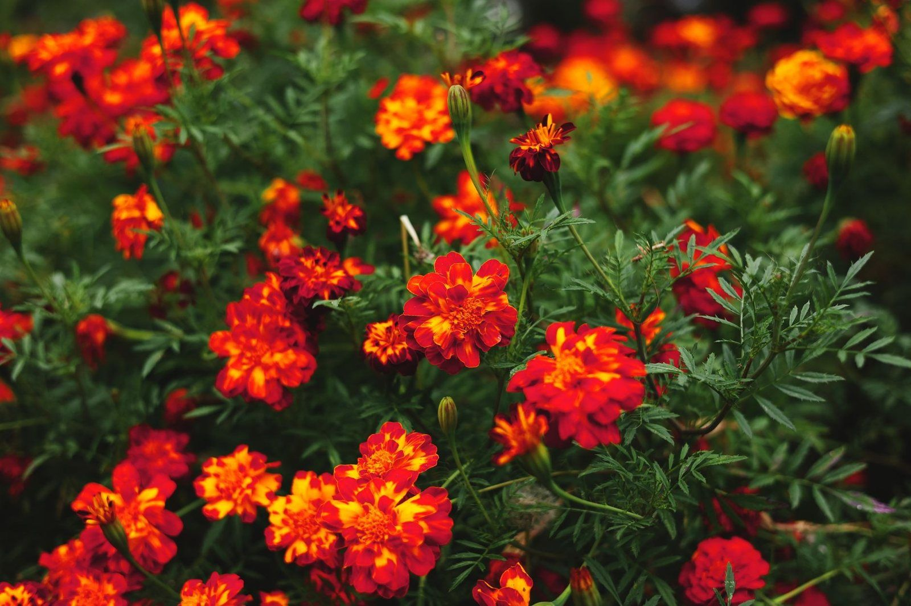
Kwiaty rabatowe
Aksamitki i begonie, które kwitną do przymrozków i szybko zapełniają rabatę.
Kwiaty rabatowe w ofercie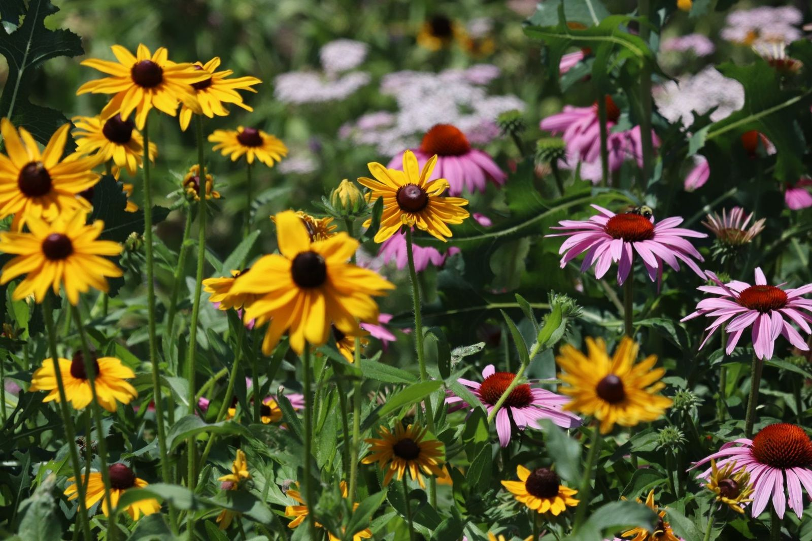
Byliny
Rośliny wieloletnie: raz posadzone, co roku odrastają i kwitną w tym samym miejscu.
Byliny w ofercieIglaki i krzewy ozdobne
Zieleń na cały rok i krzewy, które nadają ogrodowi kształt.
Iglaki i krzewy w ofercieGwiazdy balkonów i rabat
Pięć nazw, od których zaczyna się większość udanych balkonów. Szczegóły każdej rośliny znajdziesz w ofercie.
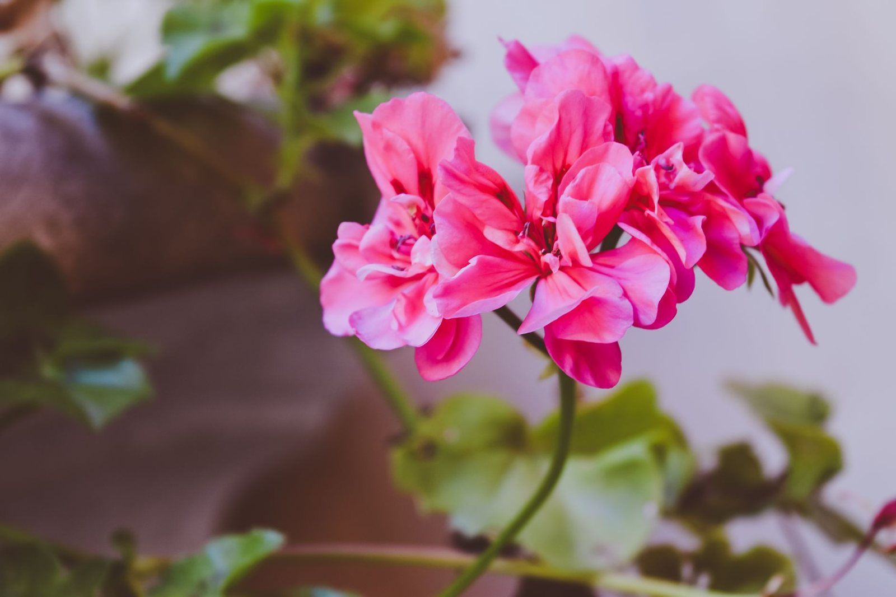
Pelargonie
Klasyka parapetów i skrzynek pod oknem.
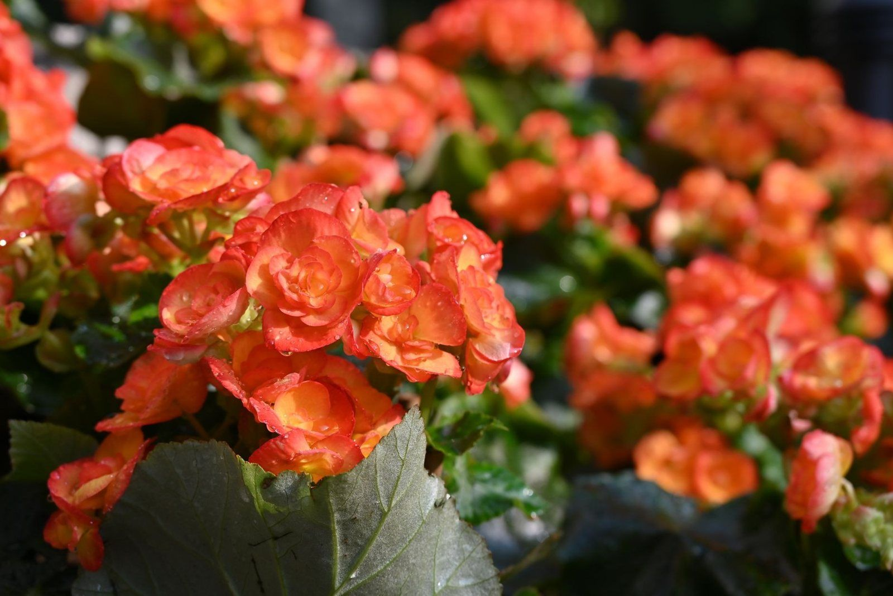
Begonie
Na balkon, na który słońce zagląda tylko rano albo po południu.
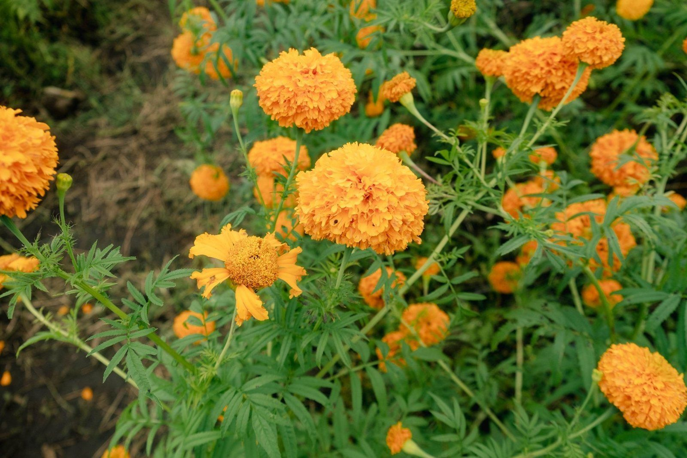
Aksamitki
Pomarańczowe kępy, które trzymają kolor aż do jesieni.
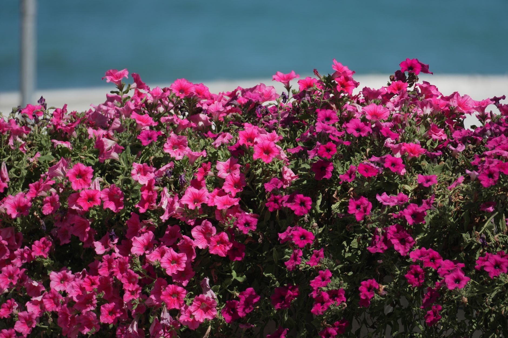
Supertunia Vista
Jedna sadzonka, a latem cała kula kwiatów.
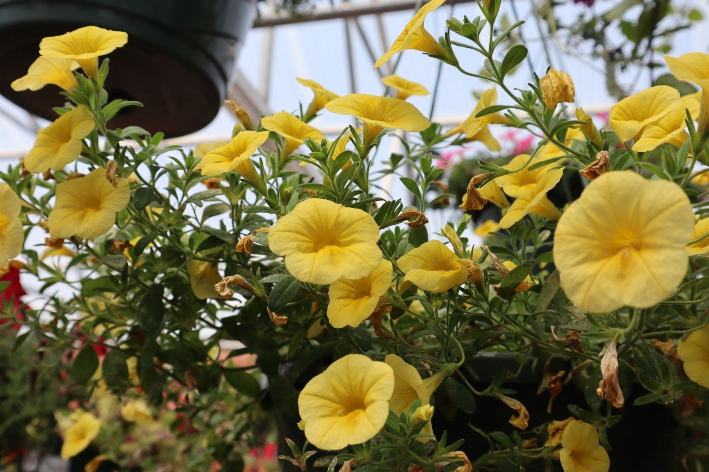
Millionbells
Kaskada małych kwiatków z koszy i balustrad.
Kiedy kupić, kiedy posadzić
Kwiaty balkonowe boją się przymrozków, a byliny i iglaki lubią chłodniejsze miesiące. Tak wygląda sezon krok po kroku.
- kwiecień
Wybór i przygotowanie
Przygotuj skrzynki i świeżą ziemię. Kupione rośliny w ciepłe dni mogą stać na zewnątrz, na noc zabieraj je pod dach.
- od połowy maja
Sadzenie na balkon
Po zimnych ogrodnikach, czyli po 15 maja, przymrozki zwykle już nie wracają. To dobry moment, żeby obsadzić skrzynki i rabaty.
- czerwiec - sierpień
Podlewanie i nawożenie
W upały skrzynki podlewaj codziennie, a kwiaty dokarmiaj nawozem co 7-10 dni. Przekwitłe kwiaty usuwaj na bieżąco.
- wrzesień - październik
Czas na byliny i iglaki
Wczesna jesień to dobry termin sadzenia bylin, iglaków i krzewów. Kwiaty balkonowe kwitną do pierwszych przymrozków.
Piękne kwiaty prosto od ogrodnika!
Kwiaty Lewandowscy · Sochocin
Trzy kroki do kwitnącego balkonu
Zadzwoń
Pod numerem +48 511 382 815 powiemy, co akurat kwitnie i czy mamy odmianę, której szukasz.
Przyjedź do Sochocina
Gospodarstwo jest przy ul. Płońskiej 16, w powiecie płońskim na Mazowszu.
Wybierz rośliny
Oglądasz kwiaty na żywo i zabierasz dokładnie te sztuki, które Ci się podobają.
Pomysły na skrzynki i rabaty
Kilka inspiracji z roślin, które znajdziesz w naszej ofercie.
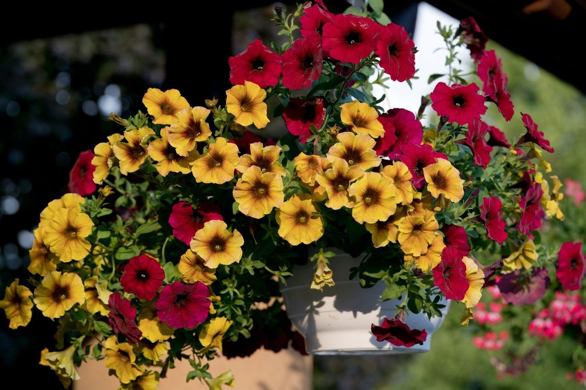
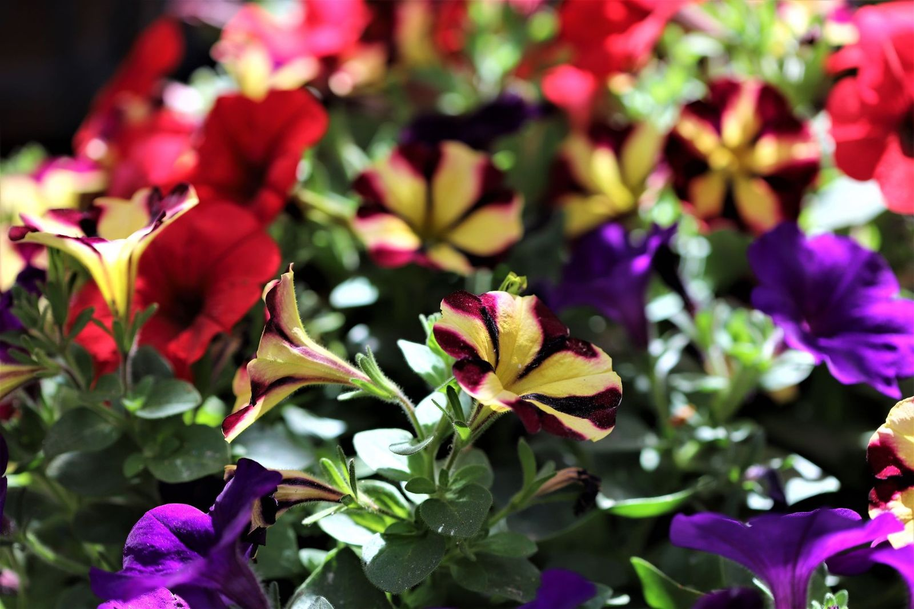
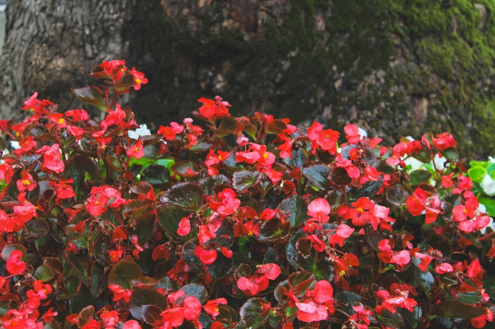
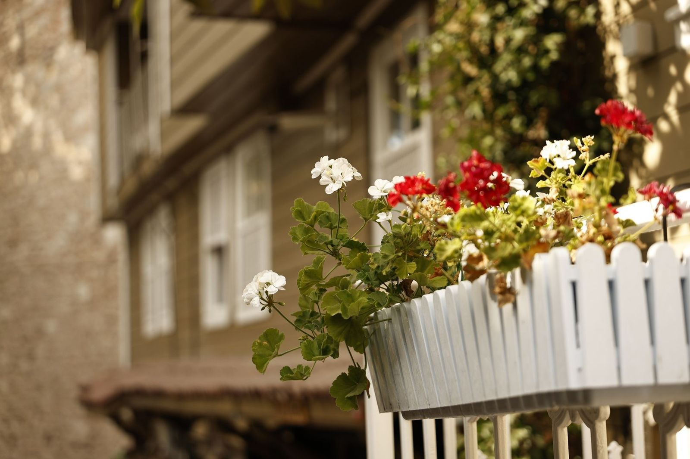
Zanim przyjedziesz
Odpowiedzi na pytania o zakupy w gospodarstwie. Nie ma tu Twojego pytania? Chętnie odpowiemy przez telefon: +48 511 382 815.
Gdzie kupić kwiaty balkonowe w okolicach Płońska?
W naszym gospodarstwie w Sochocinie, przy ul. Płońskiej 16 (powiat płoński). Rośliny oglądasz i wybierasz na miejscu.
Jakie rośliny macie w ofercie?
Kwiaty balkonowe i rabatowe, m.in. pelargonie, begonie, aksamitki, Supertunia Vista i Millionbells, a do ogrodu byliny, iglaki i krzewy ozdobne. Dostępne odmiany zmieniają się w ciągu sezonu.
Czy przed przyjazdem trzeba zadzwonić?
Warto. Pod numerem +48 511 382 815 powiemy, co akurat kwitnie, i umówimy się na przyjazd.
Czy można kupić większą ilość kwiatów, np. do obsadzenia rabat?
Tak, zadzwoń i podaj, ile roślin potrzebujesz. Sprawdzimy, co mamy, i ustalimy termin odbioru.
Kiedy najlepiej kupić kwiaty na balkon?
Kwiaty balkonowe kupuje się głównie w kwietniu i maju. Na stałe wystawiaj je po zimnych ogrodnikach, czyli po 15 maja, gdy minie ryzyko przymrozków.
Przyjedź po kwiaty do Sochocina
ul. Płońska 16, 09-110 Sochocin. Zadzwoń przed przyjazdem, a powiemy, co akurat kwitnie.